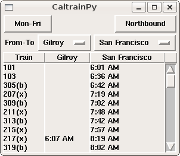

I started on the Python version since I wanted a schedule for my Windows Mobile device after I had migrated away from a PalmOS device which had a great Caltrain schedule application. Unfortunately Python doesn't run very well on Windows Mobile, so I have pretty much stopped improving the UI of the Python version.
CaltrainPY version is available from the Python Package Index aka Cheeseshop; be sure to read the installation instructions.
The Python version can also work as a library to screen scrape the online Caltrain schedules and provide output in various formats, including JSON.
I used the JSON output as basis for the Javascript version. The Javascript version is available online at caltrain.heikkitoivonen.net.

The source is available from Subversion at http://svn.heikkitoivonen.net/caltrain/trunk/
If you notice any problems or have suggestions for improvement, please let me know. --Heikki Toivonen.